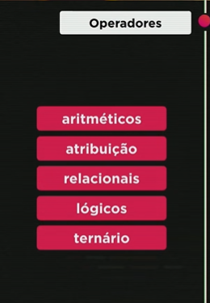
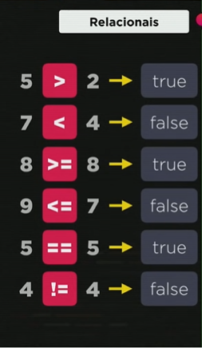
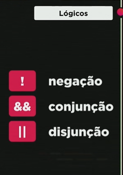
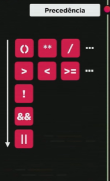
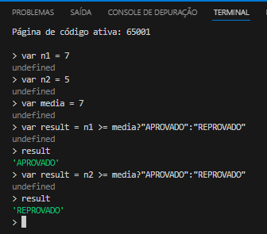
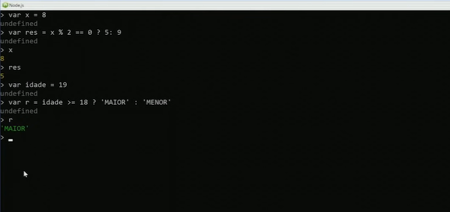

Operadores - Parte 1: Aritméticos e Atribuição

- Operadores Aritméticos:
- 5 + 2 = 7
- 5 - 2 = 3
- 5 * 2 = 10
- 5 / 2 = 2.5
- Operador de resto de divisão inteira -> 5 % 2 = 1
- Operador para potência -> 5 ** 2 = 25
- A precedência dos operadores é () -> ** -> * ou / ou % -> + ou -.
- caso a precedência seja igual vai ser feito quem aparecer primeiro.
- Para alterar a ordem das operações colocamos entre parênteses.
- Quando a variável em uma operação recebe ela mais algum número podemos abreviar desta forma abaixo
- São operadores de atribuição. O incremento serve para caso a variável receba ela - 1 ou +1. Existe também o decremento que é o --x ou ++x. Existe uma diferença entre os dois mas veremos isso mais a frente.
Operadores - Parte 2: Relacionais, Lógicos e Ternário.
Identidade
- No exemplo n1 é igual a n2 pois para o javascript apenas interessa o valor e não o tipo. Para confirmar também além do valor, o tipo, utilizamos o operador === (igualdade restrita).
- Conjunção quer dizer que é um 'E' outro para estar verdadeiro e a Disjunção é um 'OU' outro para que seja verdadeiro. 
- A ordem de precedêcia dos operadores é:
- Aritméticos
- Relacionais
- Lógicos
- A ordem abaixo segue no primeiro exemplo 'a' é maior do que 'b'? (False) e O resto da divisão de b e 2 (0) é igual a 0? (True) Então é False
- Ja na segunda 'a' é menor ou igual a 'b'? (True) ou b dividido por 2 (4) é igual a 2? (False) Então é True
Se por acaso na mesma expressão tivermos todos os operadores lógicos devemos seguir a ordem: ! && ||
O operador ternário é utilizado com três partes, bloco teste lógico e o que vai acontecer quando for verdadeiro e o que acontece se for falso.
 